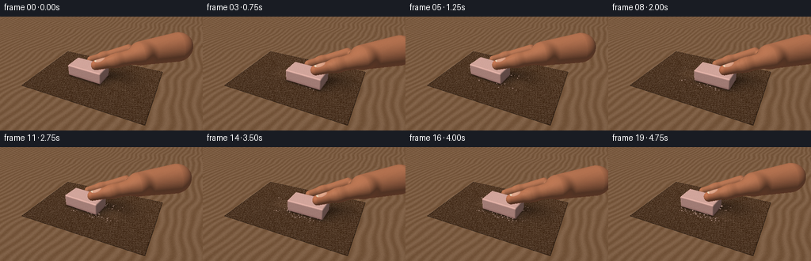
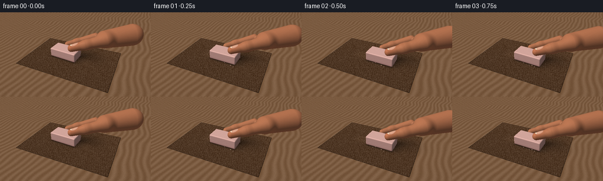
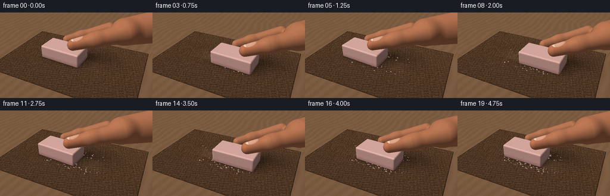
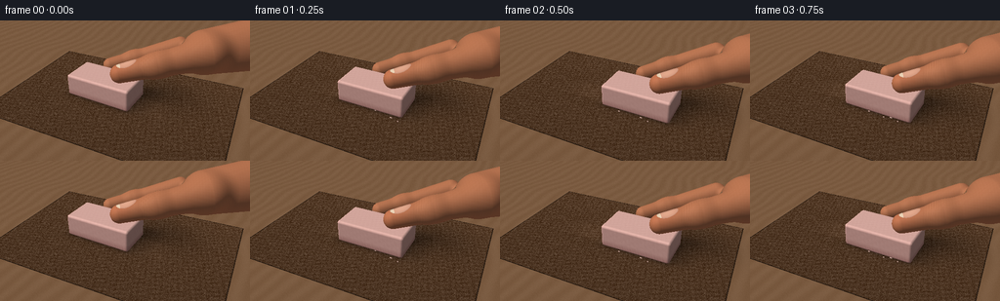

CODING AGENTS AS PIXEL WORLD MODELS
traex/GPT-6.1-Sol · material_0016
点击播放 · 原生 RGB 像素
逐轮保存的候选
回放视频、检查图与代码变化。
每份候选均可单独播放。实际图片检查记录在下方工具轨迹中。
候选 01播放与检查图
点击播放 · 原生 RGB 像素


展开代码变化
--- 上一保存版本
+++ 本次保存版本
@@ -0,0 +1,211 @@
+from pathlib import Path
+import numpy as np
+from PIL import Image
+from artifact_io import save
+
+# Analytic camera rays, implicit beveled rubber, and sculpted fingers.
+W,H = 512,288
+rng=np.random.default_rng(17)
+def normalize(v):
+ return v/np.maximum(np.linalg.norm(v,axis=-1,keepdims=True),1e-9)
+def smoothmin(a,b,k):
+ h=np.clip(.5+.5*(b-a)/k,0,1)
+ return b*(1-h)+a*h-k*h*(1-h)
+def capsule(p,a,b,ra,rb):
+ a=np.array(a); b=np.array(b); ab=b-a
+ h=np.clip(np.sum((p-a)*ab,axis=-1)/np.dot(ab,ab),0,1)
+ return np.linalg.norm(p-a-h[...,None]*ab,axis=-1)-(ra+(rb-ra)*h)
+
+def skin_sdf(p):
+ # The thumb and forefinger extend from a cropped hand and hold the eraser.
+ thumb=capsule(p,[.43,-.10,.74],[1.15,.35,.93],.205,.265)
+ thumb=smoothmin(thumb,capsule(p,[1.10,.31,.92],[2.02,.98,1.13],.26,.36),.16)
+ index=capsule(p,[-.22,.59,.48],[.23,.99,.59],.175,.195)
+ index=smoothmin(index,capsule(p,[.20,.97,.58],[1.19,1.58,.89],.19,.24),.15)
+ palm=capsule(p,[1.85,1.28,1.00],[3.13,2.35,1.12],.51,.64)
+ return smoothmin(smoothmin(thumb,palm,.30),index,.16)
+
+def eraser_sdf(p):
+ q=np.abs(p-np.array([0.,0.,.315]))-np.array([.735,.352,.203])
+ return np.linalg.norm(np.maximum(q,0),axis=-1)+np.minimum(np.max(q,axis=-1),0)-.057
+
+def surface_norm(p,fn):
+ e=.0015
+ return normalize(np.stack([fn(p+np.eye(3)[j]*e)-fn(p-np.eye(3)[j]*e) for j in range(3)],axis=-1))
+
+def intersect(ro,rd,fn,bounds):
+ lo,hi=np.array(bounds[0]),np.array(bounds[1])
+ ts=(lo-ro)/rd; te=(hi-ro)/rd
+ enter=np.maximum(np.max(np.minimum(ts,te),axis=-1),0)
+ leave=np.min(np.maximum(ts,te),axis=-1)
+ possible=leave>enter
+ ids=np.flatnonzero(possible)
+ t=enter[ids].copy(); dirs=rd[ids]
+ live=np.ones(len(ids),bool); hit=np.zeros(len(ids),bool)
+ for _ in range(85):
+ ii=np.flatnonzero(live)
+ if not len(ii):break
+ d=fn(ro+dirs[ii]*t[ii,None])
+ near=d<.00065
+ hit[ii[near]]=True; live[ii[near]]=False
+ t[ii]+=np.maximum(d,.0002)*.85
+ live[ii[t[ii]>leave[ids[ii]]]]=False
+ out=np.full(len(rd),np.inf)
+ out[ids[hit]]=t[hit]
+ return out
+
+camera=np.array([3.3,-5.8,4.6]); target=np.array([.20,.13,.25])
+forward=normalize(target-camera); right=normalize(np.cross(forward,[0,0,1])); up=np.cross(right,forward)
+y,x=np.mgrid[0:H,0:W]
+focal=H/(2*np.tan(np.deg2rad(34)/2))
+rays=normalize(forward+(x.ravel()[:,None]+.5-W/2)/focal*right-(y.ravel()[:,None]+.5-H/2)/focal*up)
+light=normalize(np.array([-3.5,-4.3,7.0]))
+
+# Grain is attached to physical coordinates so it does not swim between frames.
+def noise(p,scale):
+ a=np.sin(p[...,0]*scale*1.17+p[...,1]*scale*.43+p[...,2]*scale*.17)
+ b=np.sin(p[...,0]*scale*-.37+p[...,1]*scale*1.09+p[...,2]*scale*.64)
+ c=np.sin(p[...,0]*scale*.71-p[...,1]*scale*.93+p[...,2]*scale*.88)
+ return (a+b+c)/3
+
+def hashnoise(p,scale):
+ q=np.floor(p*scale)
+ return np.mod(np.sin(q[...,0]*127.1+q[...,1]*311.7+q[...,2]*74.7)*43758.5453,1)
+
+def lit(color,n,p,rough=.8):
+ diffuse=np.maximum(n@light,0)
+ view=normalize(camera-p)
+ half=normalize(view+light)
+ spec=np.maximum(np.sum(n*half,axis=-1),0)**(18 if rough>.7 else 45)
+ return color*(.40+.62*diffuse[:,None])+spec[:,None]*(.025 if rough>.7 else .09)
+
+# Base table and the sandpaper sheet. The sand is individual irregular mineral grit.
+tground=(.015-camera[2])/rays[:,2]
+P=camera+rays*tground[:,None]
+# slightly skewed sandpaper edges on a wood workbench
+ang=.055; ca,sa=np.cos(ang),np.sin(ang)
+u=P[:,0]*ca+P[:,1]*sa; v=-P[:,0]*sa+P[:,1]*ca
+paper=(np.abs(u)<2.56)&(np.abs(v)<1.73)
+# Table with subtly worn longitudinal wooden grain.
+woodgrain=np.sin(P[:,0]*19+2.1*np.sin(P[:,1]*1.6)+noise(P,3)*2)
+woodnoise=hashnoise(P,120)-.5
+base=np.tile([.46,.335,.233],(len(P),1))
+base+=(woodgrain*.035+woodnoise*.035)[:,None]
+# rough reddish-brown abrasive, intentionally visibly different from smooth rubber
+fine=hashnoise(P,195)
+mid=hashnoise(P,90)
+coarse=noise(P,48)
+gr=(fine-.5)*.155+(mid-.5)*.080+coarse*.035
+sand=np.tile([.31,.211,.137],(len(P),1))+gr[:,None]
+sand+=np.maximum(fine-.83,0)[:,None]*np.array([.28,.24,.17])
+sand*= (.88+.09*np.clip((P[:,1]+1.8)/3.6,0,1))[:,None]
+base[paper]=sand[paper]
+# thin dark edges and warm ambient falloff
+edge=np.minimum(2.56-np.abs(u),1.73-np.abs(v))
+base[paper&(edge<.022)]*=.55
+base*=np.clip(1.015-.040*((x.ravel()-W*.40)/W)**2-.09*((y.ravel()-H*.42)/H)**2,.8,1)[:,None]
+
+# Rubber debris left behind the repeated strokes; static coordinates + incremental deposition.
+crumbs=[]
+for i in range(145):
+ birth=rng.integers(1,20)
+ t=birth/4
+ mx=.57*np.sin(2*np.pi*t/1.55-.7)
+ pos=np.array([mx+rng.uniform(-.79,.78),rng.choice([-1,1])*rng.uniform(.28,.66),.031])
+ rad=rng.uniform(.012,.033)
+ crumbs.append((birth,pos,rad,rng.uniform(.6,1.4)))
+
+def render(i):
+ time=i/4
+ dx=.57*np.sin(2*np.pi*time/1.55-.7)
+ dy=.045*np.sin(2*np.pi*time/1.55+.5)
+ turn=.035*np.sin(2*np.pi*time/1.55-.1)
+ ct,st=np.cos(turn),np.sin(turn)
+ R=np.array([[ct,-st,0],[st,ct,0],[0,0,1]])
+ shift=np.array([dx,dy,0])
+ ro=(camera-shift)@R; rd=rays@R
+ er_t=intersect(ro,rd,eraser_sdf,([-.86,-.48,.035],[.86,.48,.65]))
+ sk_t=intersect(ro,rd,skin_sdf,([-.5,-.40,.20],[4.,3.3,1.9]))
+ out=base.copy()
+ # Contact shadows under the rubber, broader cast shadows toward the back right.
+ local=(P-shift)@R
+ dist=np.sqrt((np.maximum(np.abs(local[:,0])-.71,0)/.15)**2+(np.maximum(np.abs(local[:,1])-.34,0)/.13)**2)
+ contact=np.exp(-dist*1.9)*.45
+ cast=np.exp(-((local[:,0]-.17)/.97)**6-((local[:,1]-.22)/.56)**6)*.23
+ handshadow=np.exp(-((local[:,0]-1.10)/.85)**2-((local[:,1]-.68)/.61)**2)*.22
+ out*= (1-np.clip(contact+cast+handshadow,0,.64))[:,None]
+ # Pale rubbed region in the paper builds up gently without obliterating grit.
+ abrasion=np.exp(-(P[:,0]/1.16)**8-(P[:,1]/.31)**8)*(.035+i*.0018)
+ out[paper]+=abrasion[paper,None]*np.array([.70,.56,.45])
+ depth=tground.copy()
+ # Tiny curled rubber fragments rendered as ellipsoids, lit and with grounded shadows.
+ for birth,pos,r,stretch in crumbs:
+ if birth>i: continue
+ center=pos.copy(); center[2]=.020+r*.55
+ scale=np.array([r*stretch,r*.50,r*.55])
+ oc=(camera-center)/scale; dr=rays/scale
+ A=np.sum(dr*dr,axis=-1); B=dr@oc; C=np.dot(oc,oc)-1
+ disc=B*B-A*C
+ idx=np.flatnonzero(disc>0)
+ t=(-B[idx]-np.sqrt(disc[idx]))/A[idx]
+ keep=(t>0)&(t<depth[idx]); idx=idx[keep]; t=t[keep]
+ if len(idx):
+ pp=camera+rays[idx]*t[:,None]; normal=normalize((pp-center)/(scale*scale))
+ out[idx]=lit(np.tile([.83,.67,.61],(len(idx),1)),normal,pp)
+ depth[idx]=t
+ choose=(er_t<sk_t)&(er_t<depth)
+ idx=np.flatnonzero(choose)
+ p=ro+rd[idx]*er_t[idx,None]
+ nl=surface_norm(p,eraser_sdf); nw=nl@R.T
+ wp=p@R.T+shift
+ # Smooth, mildly translucent pink rubber with dull scuffs concentrated at the working face.
+ tex=noise(p,58)*.011+(hashnoise(p,190)-.5)*.022
+ rubber=np.tile([.88,.665,.625],(len(p),1))+tex[:,None]
+ wear=np.clip((.20-p[:,2])/.16,0,1)
+ streak=(np.sin(p[:,0]*101+p[:,2]*28)*.5+.5)*.04*wear
+ rubber-=wear[:,None]*np.array([.13,.14,.13])+streak[:,None]
+ # lighter rounded top, slightly warmer edges
+ rubber+=np.maximum(nl[:,2],0)[:,None]*np.array([.035,.045,.04])
+ out[idx]=lit(rubber,nw,wp,.9)
+ depth[idx]=er_t[idx]
+ idx=np.flatnonzero(sk_t<depth)
+ p=ro+rd[idx]*sk_t[idx,None]
+ nl=surface_norm(p,skin_sdf); nw=nl@R.T; wp=p@R.T+shift
+ skin=np.tile([.73,.449,.307],(len(p),1))
+ texture=noise(p,87)*.007+(hashnoise(p,215)-.5)*.010
+ skin+=texture[:,None]
+ # Redder soft pads, desaturated highlight, softly modeled folds near finger joints.
+ pad=np.exp(-((p[:,0]-.43)/.30)**2-((p[:,1]+.1)/.28)**2)
+ skin+=pad[:,None]*np.array([.035,-.012,-.013])
+ joint=np.exp(-((p[:,0]-.94)/.14)**2-((p[:,1]-.22)/.32)**2)
+ crease=(np.exp(-(np.sin((p[:,0]+p[:,1]*.35)*64)/.22)**2))*.075*joint
+ skin-=crease[:,None]*np.array([.8,.65,.5])
+ # Thumbnail embedded on the top of the distal thumb, with curved free edge.
+ axis=normalize(np.array([.84,.54,0.])); across=np.array([-axis[1],axis[0],0])
+ nc=np.array([.55,-.02,.918]); q=p-nc
+ a=q@axis; b=q@across
+ nailshape=(a/.215)**2+(b/.133)**2
+ nail=(nailshape<1)&(p[:,2]>.865)&(nl[:,2]>.30)
+ nc_col=np.tile([.84,.593,.483],(len(p),1))
+ nc_col+=(1-np.clip(nailshape,0,1))[:,None]*np.array([.065,.072,.064])
+ free=(a<-.135)&nail
+ nc_col[free]=[.94,.837,.715]
+ rim=(nailshape>.85)&nail
+ nc_col[rim]*=.94
+ skin[nail]=nc_col[nail]
+ colors=lit(skin,nw,wp,.72)
+ # gentle subsurface orange bounce in shadowed finger areas
+ colors+=np.maximum(-nw@light,0)[:,None]*np.array([.07,.022,.009])
+ out[idx]=colors
+ # Soft photographic contrast and modest warm light, no camera motion.
+ out=np.clip(out,0,1)
+ out=out**(.94)
+ image=Image.fromarray(np.uint8(np.clip(out.reshape(H,W,3)*255,0,255)))
+ return np.asarray(image.resize((256,144),Image.Resampling.LANCZOS))
+
+if __name__=='__main__':
+ frames=[]
+ for i in range(20):
+ frames.append(render(i))
+ print('rendered',i,flush=True)
+ save(np.stack(frames),Path(__file__).resolve().parent)
候选 02播放与检查图
点击播放 · 原生 RGB 像素


展开代码变化
--- 上一保存版本
+++ 本次保存版本
@@ -26,7 +26,7 @@
return smoothmin(smoothmin(thumb,palm,.30),index,.16)
def eraser_sdf(p):
- q=np.abs(p-np.array([0.,0.,.315]))-np.array([.735,.352,.203])
+ q=np.abs(p-np.array([0.,0.,.275]))-np.array([.735,.352,.203])
return np.linalg.norm(np.maximum(q,0),axis=-1)+np.minimum(np.max(q,axis=-1),0)-.057
def surface_norm(p,fn):
@@ -54,10 +54,10 @@
out[ids[hit]]=t[hit]
return out
-camera=np.array([3.3,-5.8,4.6]); target=np.array([.20,.13,.25])
+camera=np.array([2.8,-4.9,3.8]); target=np.array([.10,.10,.22])
forward=normalize(target-camera); right=normalize(np.cross(forward,[0,0,1])); up=np.cross(right,forward)
y,x=np.mgrid[0:H,0:W]
-focal=H/(2*np.tan(np.deg2rad(34)/2))
+focal=H/(2*np.tan(np.deg2rad(27)/2))
rays=normalize(forward+(x.ravel()[:,None]+.5-W/2)/focal*right-(y.ravel()[:,None]+.5-H/2)/focal*up)
light=normalize(np.array([-3.5,-4.3,7.0]))
@@ -90,7 +90,7 @@
woodgrain=np.sin(P[:,0]*19+2.1*np.sin(P[:,1]*1.6)+noise(P,3)*2)
woodnoise=hashnoise(P,120)-.5
base=np.tile([.46,.335,.233],(len(P),1))
-base+=(woodgrain*.035+woodnoise*.035)[:,None]
+base+=(woodgrain*.013+woodnoise*.025)[:,None]
# rough reddish-brown abrasive, intentionally visibly different from smooth rubber
fine=hashnoise(P,195)
mid=hashnoise(P,90)
可观测工具轨迹
实际执行的命令与返回图片。
命令 1exit 0
/bin/bash -lc 'ls -la && cat prompt.txt && cat GENERATION_RULES.md && cat task_spec.json'
命令 2exit 0
/bin/bash -lc "cat artifact_io.py && python - <<'PY' import importlib.util for p in ['numpy','PIL','scipy','cv2']: print(p, bool(importlib.util.find_spec(p))) PY"
命令 3exit 0
/bin/bash -lc "cat > generate.py <<'PY'
from pathlib import Path
import numpy as np
from PIL import Image
from artifact_io import save
# Analytic camera rays, implicit beveled rubber, and sculpted fingers.
W,H = 512,288
rng=np.random.default_rng(17)
def normalize(v):
return v/np.maximum(np.linalg.norm(v,axis=-1,keepdims=True),1e-9)
def smoothmin(a,b,k):
h=np.clip(.5+.5*(b-a)/k,0,1)
return b*(1-h)+a*h-k*h*(1-h)
def capsule(p,a,b,ra,rb):
a=np.array(a); b=np.array(b); ab=b-a
h=np.clip(np.sum((p-a)*ab,axis=-1)/np.dot(ab,ab),0,1)
return np.linalg.norm(p-a-h[...,None]*ab,axis=-1)-(ra+(rb-ra)*h)
def skin_sdf(p):
# The thumb and forefinger extend from a cropped hand and hold the eraser.
thumb=capsule(p,[.43,-.10,.74],[1.15,.35,.93],.205,.265)
thumb=smoothmin(thumb,capsule(p,[1.10,.31,.92],[2.02,.98,1.13],.26,.36),.16)
index=capsule(p,[-.22,.59,.48],[.23,.99,.59],.175,.195)
index=smoothmin(index,capsule(p,[.20,.97,.58],[1.19,1.58,.89],.19,.24),.15)
palm=capsule(p,[1.85,1.28,1.00],[3.13,2.35,1.12],.51,.64)
return smoothmin(smoothmin(thumb,palm,.30),index,.16)
def eraser_sdf(p):
q=np.abs(p-np.array([0.,0.,.315]))-np.array([.735,.352,.203])
return np.linalg.norm(np.maximum(q,0),axis=-1)+np.minimum(np.max(q,axis=-1),0)-.057
def surface_norm(p,fn):
e=.0015
return normalize(np.stack([fn(p+np.eye(3)[j]*e)-fn(p-np.eye(3)[j]*e) for j in range(3)],axis=-1))
def intersect(ro,rd,fn,bounds):
lo,hi=np.array(bounds[0]),np.array(bounds[1])
ts=(lo-ro)/rd; te=(hi-ro)/rd
enter=np.maximum(np.max(np.minimum(ts,te),axis=-1),0)
leave=np.min(np.maximum(ts,te),axis=-1)
possible=leave>enter
ids=np.flatnonzero(possible)
t=enter[ids].copy(); dirs=rd[ids]
live=np.ones(len(ids),bool); hit=np.zeros(len(ids),bool)
for _ in range(85):
ii=np.flatnonzero(live)
if not len(ii):break
d=fn(ro+dirs[ii]*t[ii,None])
near=d<.00065
hit[ii[near]]=True; live[ii[near]]=False
t[ii]+=np.maximum(d,.0002)*.85
live[ii[t[ii]>leave[ids[ii]]]]=False
out=np.full(len(rd),np.inf)
out[ids[hit]]=t[hit]
return out
camera=np.array([3.3,-5.8,4.6]); target=np.array([.20,.13,.25])
forward=normalize(target-camera); right=normalize(np.cross(forward,[0,0,1])); up=np.cross(right,forward)
y,x=np.mgrid[0:H,0:W]
focal=H/(2*np.tan(np.deg2rad(34)/2))
rays=normalize(forward+(x.ravel()[:,None]+.5-W/2)/focal*right-(y.ravel()[:,None]+.5-H/2)/focal*up)
light=normalize(np.array([-3.5,-4.3,7.0]))
# Grain is attached to physical coordinates so it does not swim between frames.
def noise(p,scale):
a=np.sin(p[...,0]*scale*1.17+p[...,1]*scale*.43+p[...,2]*scale*.17)
b=np.sin(p[...,0]*scale*-.37+p[...,1]*scale*1.09+p[...,2]*scale*.64)
c=np.sin(p[...,0]*scale*.71-p[...,1]*scale*.93+p[...,2]*scale*.88)
return (a+b+c)/3
def hashnoise(p,scale):
q=np.floor(p*scale)
return np.mod(np.sin(q[...,0]*127.1+q[...,1]*311.7+q[...,2]*74.7)*43758.5453,1)
def lit(color,n,p,rough=.8):
diffuse=np.maximum(n@light,0)
view=normalize(camera-p)
half=normalize(view+light)
spec=np.maximum(np.sum(n*half,axis=-1),0)**(18 if rough>.7 else 45)
return color*(.40+.62*diffuse[:,None])+spec[:,None]*(.025 if rough>.7 else .09)
# Base table and the sandpaper sheet. The sand is individual irregular mineral grit.
tground=(.015-camera[2])/rays[:,2]
P=camera+rays*tground[:,None]
# slightly skewed sandpaper edges on a wood workbench
ang=.055; ca,sa=np.cos(ang),np.sin(ang)
u=P[:,0]*ca+P[:,1]*sa; v=-P[:,0]*sa+P[:,1]*ca
paper=(np.abs(u)<2.56)&(np.abs(v)<1.73)
# Table with subtly worn longitudinal wooden grain.
woodgrain=np.sin(P[:,0]*19+2.1*np.sin(P[:,1]*1.6)+noise(P,3)*2)
woodnoise=hashnoise(P,120)-.5
base=np.tile([.46,.335,.233],(len(P),1))
base+=(woodgrain*.035+woodnoise*.035)[:,None]
# rough reddish-brown abrasive, intentionally visibly different from smooth rubber
fine=hashnoise(P,195)
mid=hashnoise(P,90)
coarse=noise(P,48)
gr=(fine-.5)*.155+(mid-.5)*.080+coarse*.035
sand=np.tile([.31,.211,.137],(len(P),1))+gr[:,None]
sand+=np.maximum(fine-.83,0)[:,None]*np.array([.28,.24,.17])
sand*= (.88+.09*np.clip((P[:,1]+1.8)/3.6,0,1))[:,None]
base[paper]=sand[paper]
# thin dark edges and warm ambient falloff
edge=np.minimum(2.56-np.abs(u),1.73-np.abs(v))
base[paper&(edge<.022)]*=.55
base*=np.clip(1.015-.040*((x.ravel()-W*.40)/W)**2-.09*((y.ravel()-H*.42)/H)**2,.8,1)[:,None]
# Rubber debris left behind the repeated strokes; static coordinates + incremental deposition.
crumbs=[]
for i in range(145):
birth=rng.integers(1,20)
t=birth/4
mx=.57*np.sin(2*np.pi*t/1.55-.7)
pos=np.array([mx+rng.uniform(-.79,.78),rng.choice([-1,1])*rng.uniform(.28,.66),.031])
rad=rng.uniform(.012,.033)
crumbs.append((birth,pos,rad,rng.uniform(.6,1.4)))
def render(i):
time=i/4
dx=.57*np.sin(2*np.pi*time/1.55-.7)
dy=.045*np.sin(2*np.pi*time/1.55+.5)
turn=.035*np.sin(2*np.pi*time/1.55-.1)
ct,st=np.cos(turn),np.sin(turn)
R=np.array([[ct,-st,0],[st,ct,0],[0,0,1]])
shift=np.array([dx,dy,0])
ro=(camera-shift)@R; rd=rays@R
er_t=intersect(ro,rd,eraser_sdf,([-.86,-.48,.035],[.86,.48,.65]))
sk_t=intersect(ro,rd,skin_sdf,([-.5,-.40,.20],[4.,3.3,1.9]))
out=base.copy()
# Contact shadows under the rubber, broader cast shadows toward the back right.
local=(P-shift)@R
dist=np.sqrt((np.maximum(np.abs(local[:,0])-.71,0)/.15)**2+(np.maximum(np.abs(local[:,1])-.34,0)/.13)**2)
contact=np.exp(-dist*1.9)*.45
cast=np.exp(-((local[:,0]-.17)/.97)**6-((local[:,1]-.22)/.56)**6)*.23
handshadow=np.exp(-((local[:,0]-1.10)/.85)**2-((local[:,1]-.68)/.61)**2)*.22
out*= (1-np.clip(contact+cast+handshadow,0,.64))[:,None]
# Pale rubbed region in the paper builds up gently without obliterating grit.
abrasion=np.exp(-(P[:,0]/1.16)**8-(P[:,1]/.31)**8)*(.035+i*.0018)
out[paper]+=abrasion[paper,None]*np.array([.70,.56,.45])
depth=tground.copy()
# Tiny curled rubber fragments rendered as ellipsoids, lit and with grounded shadows.
for birth,pos,r,stretch in crumbs:
if birth>i: continue
center=pos.copy(); center[2]=.020+r*.55
scale=np.array([r*stretch,r*.50,r*.55])
oc=(camera-center)/scale; dr=rays/scale
A=np.sum(dr*dr,axis=-1); B=dr@oc; C=np.dot(oc,oc)-1
disc=B*B-A*C
idx=np.flatnonzero(disc>0)
t=(-B[idx]-np.sqrt(disc[idx]))/A[idx]
keep=(t>0)&(t<depth[idx]); idx=idx[keep]; t=t[keep]
if len(idx):
pp=camera+rays[idx]*t[:,None]; normal=normalize((pp-center)/(scale*scale))
out[idx]=lit(np.tile([.83,.67,.61],(len(idx),1)),normal,pp)
depth[idx]=t
choose=(er_t<sk_t)&(er_t<depth)
idx=np.flatnonzero(choose)
p=ro+rd[idx]*er_t[idx,None]
nl=surface_norm(p,eraser_sdf); nw=nl@R.T
wp=p@R.T+shift
# Smooth, mildly translucent pink rubber with dull scuffs concentrated at the working face.
tex=noise(p,58)*.011+(hashnoise(p,190)-.5)*.022
rubber=np.tile([.88,.665,.625],(len(p),1))+tex[:,None]
wear=np.clip((.20-p[:,2])/.16,0,1)
streak=(np.sin(p[:,0]*101+p[:,2]*28)*.5+.5)*.04*wear
rubber-=wear[:,None]*np.array([.13,.14,.13])+streak[:,None]
# lighter rounded top, slightly warmer edges
rubber+=np.maximum(nl[:,2],0)[:,None]*np.array([.035,.045,.04])
out[idx]=lit(rubber,nw,wp,.9)
depth[idx]=er_t[idx]
idx=np.flatnonzero(sk_t<depth)
p=ro+rd[idx]*sk_t[idx,None]
nl=surface_norm(p,skin_sdf); nw=nl@R.T; wp=p@R.T+shift
skin=np.tile([.73,.449,.307],(len(p),1))
texture=noise(p,87)*.007+(hashnoise(p,215)-.5)*.010
skin+=texture[:,None]
# Redder soft pads, desaturated highlight, softly modeled folds near finger joints.
pad=np.exp(-((p[:,0]-.43)/.30)**2-((p[:,1]+.1)/.28)**2)
skin+=pad[:,None]*np.array([.035,-.012,-.013])
joint=np.exp(-((p[:,0]-.94)/.14)**2-((p[:,1]-.22)/.32)**2)
crease=(np.exp(-(np.sin((p[:,0]+p[:,1]*.35)*64)/.22)**2))*.075*joint
skin-=crease[:,None]*np.array([.8,.65,.5])
# Thumbnail embedded on the top of the distal thumb, with curved free edge.
axis=normalize(np.array([.84,.54,0.])); across=np.array([-axis[1],axis[0],0])
nc=np.array([.55,-.02,.918]); q=p-nc
a=q@axis; b=q@across
nailshape=(a/.215)**2+(b/.133)**2
nail=(nailshape<1)&(p[:,2]>.865)&(nl[:,2]>.30)
nc_col=np.tile([.84,.593,.483],(len(p),1))
nc_col+=(1-np.clip(nailshape,0,1))[:,None]*np.array([.065,.072,.064])
free=(a<-.135)&nail
nc_col[free]=[.94,.837,.715]
rim=(nailshape>.85)&nail
nc_col[rim]*=.94
skin[nail]=nc_col[nail]
colors=lit(skin,nw,wp,.72)
# gentle subsurface orange bounce in shadowed finger areas
colors+=np.maximum(-nw@light,0)[:,None]*np.array([.07,.022,.009])
out[idx]=colors
# Soft photographic contrast and modest warm light, no camera motion.
out=np.clip(out,0,1)
out=out**(.94)
image=Image.fromarray(np.uint8(np.clip(out.reshape(H,W,3)*255,0,255)))
return np.asarray(image.resize((256,144),Image.Resampling.LANCZOS))
if __name__=='__main__':
frames=[]
for i in range(20):
frames.append(render(i))
print('rendered',i,flush=True)
save(np.stack(frames),Path(__file__).resolve().parent)
PY
OPENBLAS_NUM_THREADS=1 python generate.py"命令 4exit 0
/bin/bash -lc "python - <<'PY'
p='generate.py'
s=open(p).read().replace('[0.,0.,.315]', '[0.,0.,.275]').replace('camera=np.array([3.3,-5.8,4.6]); target=np.array([.20,.13,.25])','camera=np.array([2.8,-4.9,3.8]); target=np.array([.10,.10,.22])').replace('np.deg2rad(34)','np.deg2rad(27)').replace('woodgrain*.035+woodnoise*.035','woodgrain*.013+woodnoise*.025')
open(p,'w').write(s)
PY
OPENBLAS_NUM_THREADS=1 python generate.py"命令 5exit 0
/bin/bash -lc "python - <<'PY'
from pathlib import Path
import numpy as np
from PIL import Image
p=np.load('pixels.npz')['pixels']
assert p.shape==(144,256,20)
assert len(list(Path('frames').glob('*.png')))==20
assert all(Image.open(f'frames/{i:02d}.png').mode=='RGB' for i in range(20))
assert Path('index.html').is_file() and Path('generate.py').is_file()
print('Verified: 20 RGB frames, 256Ã144, 4 fps; output artifacts present.')
PY"视觉工具实际返回图片 1

视觉工具实际返回图片 2

保存候选 2 份；完成命令 5 次；可验证图片返回 2 张。原始 API 响应与完整日志保留在本地。